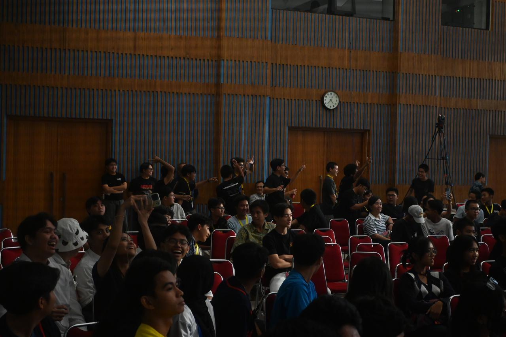

Refleksi Canisius College Cup
Canisius College Cup adalah acara yang memberi kenangan membekas bagi saya. Selama 4 tahun mengikuti acara perlombaan dimana saya menjadi panitia, selalu ada kisah dan memori yang membekas bagi saya. Ini merupakan kali ketiga saya menjadi panitia pada acara perlombaan. Pertama kali saya menjadi panitia adalah saat Canisius Super League 2 tahun lalu. Menurut saya, Canisius College Cup tahun ini memberi saya kenangan yang sangat indah karena ini merupakan kali pertama saya menonton konser. Selain itu, ada banyak alasan lain Canisius College Cup sangat membekas dalam hati saya. Perasaan saya secara keseluruhan dalam Canisius College Cup tahun ini adalah sangat senang dan bersyukur. Pada Canisius College Cup tahun ini, mungkin saya menjadi panitia ditambah banyak kesibukan lainnya. Selain menjadi panitia seksi administrasi, saya juga berkompetisi dalam 2 cabang perlombaan. Hal ini membuat saya harus cerdik dalam membagi waktu dan membuat skala prioritas. Pada Canisius College Cup ini juga, saya mencoba hal baru yaitu menjadi panitia Administrasi. Saya memilih untuk menjadi panitia Administrasi juga bukan tanpa alasan. Saya ingin mencari pengalaman baru dan berdinamika dengan teman-teman baru juga. Menurut saya, dari semua tugas kepanitiaan yang pernah saya jalani, panitia administrasi adalah panitia yang tugas dan tanggung jawabnya paling besar. Selama menjadi panitia administrasi, saya belajar untuk melatih kesabaran menghadapi banyaknya kesalahan dalam dokumen administrasi peserta. Terkadang, saya sudah emosi dengan peserta yang tidak membaca instruksi dengan benar dan masih salah dalam membaca instruksi sederhana. Namun, saya mencoba untuk menahan emosi saya dan tetap menjalin komunikasi dengan baik dan sopan. Saya sangat bersyukur dengan Canisius College Cup tahun ini, karena saya bisa mendapat banyak teman baru dan juga pengalaman-pengalaman baru Saya sangat senang karena bisa menambah relasi dengan teman di luar Kolese Kanisius. Senang rasanya dimana bisa bertemu dengan teman baru yang bisa diajak ngobrol, bermain, dan macam-macam Saya juga bersyukur karena saya bisa berpartisipasi aktif dan bekerja dengan baik di Canisius College Cup ini. Banyak juga pengorbanan yang harus dilakukan dalam Canisius College Cup. Seperti pada sabtu dan minggu, dimana biasanya kami bisa istirahat dan bermain di rumah, tetapi karena acara ini terus berjalan, kami harus bangun pagi dan pulang malam pada hari sabtu dan minggu. Tidak jarang juga saya harus pulang lebih malam karena ada tugas panitia atau juga latihan yang harus saya selesaikan. Namun menurut saya, semua lelah dan pengorbanan kami sama harganya dengan kebahagiaan yang kami dapatkan di acara Canisius College Cup ini. Selama Canisius College Cup, saya sadar bahwa saya sudah cukup bisa membagi waktu dengan baik. Mengingat persiapan Canisius College Cup bertabrakan dengan Penilaian Tengah Semester, saya sebagai seksi administrasi perlu mengecek data dan kelengkapan administrasi yang masuk. Hal ini membuat saya perlu untuk membagi waktu dengan cermat. Untungnya, baik tugas kepanitiaan maupun Penilaian Tengah Semester saya tidak ada yang tertinggal. Saya tetap bisa menjalankan dua sisi akademik maupun non akademik. Terdapat 1 momen yang paling menyenangkan selama saya mengikuti Canisius College Cup. Momen tersebut adalah ketika saya berhasil menghibur crowd saat lomba band. Sejak awal saya mengikuti lomba band bersama teman-teman saya, kami tidak mengincar untuk menjadi band terbaik. Kami sadar akan skill kami yang masih tertinggal cukup jauh dibandingkan band lain yang juga meramaikan festival band Canisius College Cup. Namun, kami mencoba menjadi band yang bisa menghibur di tengah ketegangan dan keseriusan dari Canisius College Cup. Saat kami bermain, saya melihat crowd yang tampak terhibur dengan senyum dan tawa di muka. Juri juga mengapresiasi cara kami menghibur penonton sebagai band. Pada titik itu, saya sangat bahagia dan senang karena sudah lama saya tidak bermain di panggung apalagi dengan penonton sebanyak itu. Meski kami menyadari keterbatasan band kami, kami tetap berkomitmen untuk tampil dan memberikan yang terbaik. Komitmen ini terlihat dalam persiapan dan kesediaan ami untuk tetap maju ke atas panggung serta memainkan musik untuk menyenangkan penonton. Sikap ini mencerminkan dedikasi dalam mengerjakan sesuatu. Terdapat juga momen yang membuat saya hancur, yaitu ketika tim saya gagal lolos ke babak gugur tenis meja Canisius College Cup. Kami telah berlatih dengan serius dan datang ke pertandingan dengan keyakinan penuh bahwa persiapan kami sudah cukup baik untuk mencapai hasil yang diinginkan. Namun, yang terjadi di lapangan sangat berbeda dari apa yang kami harapkan. Bukan hanya soal teknik atau kemampuan fisik yang mengecewakan, tapi lebih dari itu kami kalah mental. Sejak awal pertandingan, rasa gugup dan tekanan mulai terasa, dan seiring berjalannya waktu, kami semakin kehilangan fokus. Blunder demi blunder terjadi, dan itu memperparah situasi. Kami tahu kami bisa bermain lebih baik, tetapi pikiran kami seakan tidak mampu mengikuti ritme permainan. Saat kami mulai membuat kesalahan-kesalahan kecil, rasa frustasi dan ketidakpastian pun muncul. Alih-alih tenang dan mengendalikan emosi, kami malah semakin terjebak dalam pola pikir negatif. Pada akhirnya, hal ini membuat kami tidak bisa memberikan yang terbaik dan gagal melangkah lebih jauh. Dalam situasi seperti ini, saya belajar bahwa kepemimpinan tidak hanya muncul ketika segalanya berjalan sesuai rencana. Di saat terburuk seperti ini, kepemimpinan justru diuji. Sebagai bagian dari tim, saya perlu bangkit, memotivasi rekan-rekan, dan mengambil pelajaran dari kesalahan yang ada. Memimpin dalam kegagalan berarti mampu mengarahkan tim untuk tetap bergerak maju, belajar dari pengalaman, dan bertekad untuk tidak jatuh pada kesalahan yang sama di masa depan. Selama Canisius College Cup, nilai 4C1L yang paling saya rasa berembang adalah leadership. Saya menyadari bahwa kepemimpinan tidak hanya tentang memberikan arahan atau mengorganisir sebuah acara, tetapi juga tentang kemampuan untuk mengelola emosi, memotivasi diri sendiri, dan mendukung orang lain, terutama di saat-saat sulit. Saat tim saya mengalami kegagalan di kompetisi tenis meja, saya harus mampu mengatasi kekecewaan dan tetap menjadi figur yang bisa diandalkan oleh teman-teman saya. Kepemimpinan juga muncul saat saya harus mengambil tanggung jawab dalam peran baru sebagai panitia administrasi, di mana kesabaran dan ketelitian diuji. Saya belajar bahwa seorang pemimpin tidak hanya harus kuat secara teknis, tetapi juga harus memiliki ketahanan mental, kemampuan mendengarkan, dan kepekaan dalam menghadapi berbagai situasi. Semua pengalaman ini telah mengasah kemampuan kepemimpinan saya, baik dalam mengelola tim, berkomunikasi dengan efektif, maupun dalam menjaga semangat saat hasil yang diharapkan tidak tercapai.